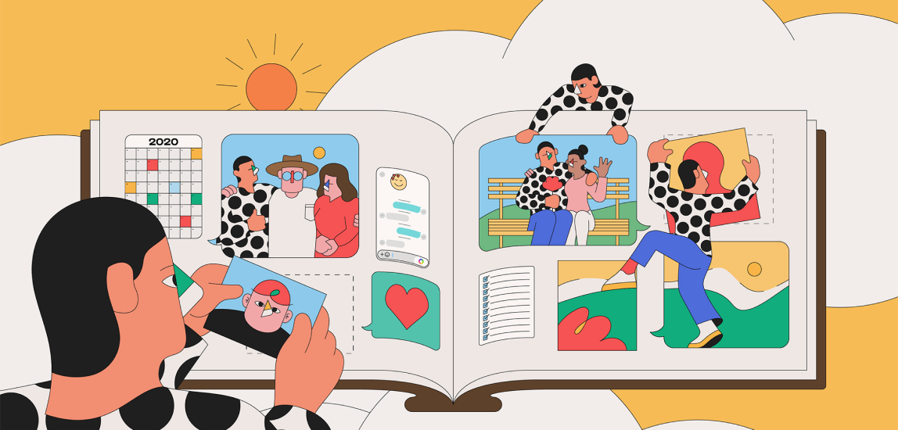
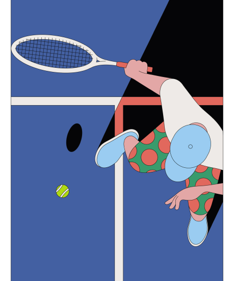
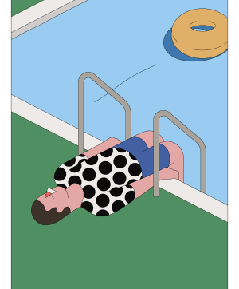
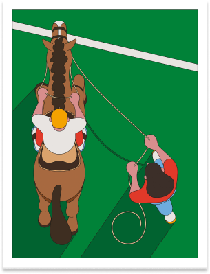
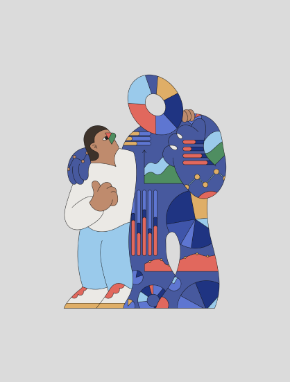

Camilo Huinca is a graphic designer and painter from Santiago, Chile. He focuses on using curiosity to develop his unique style and is fascinated by everyday scenes, moments, and personal habits. He set up Perfe Studio in 2014 for commercial graphic design projects but aims to communicate through simplicity and synthesis in his illustration work, often depicting real moments from an innocent and impartial perspective with a psychedelically shaped style.


